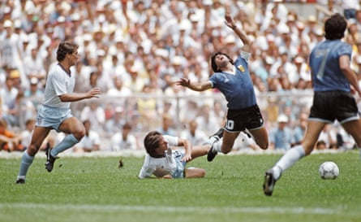
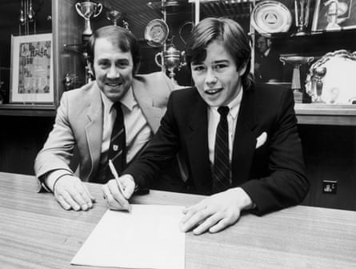
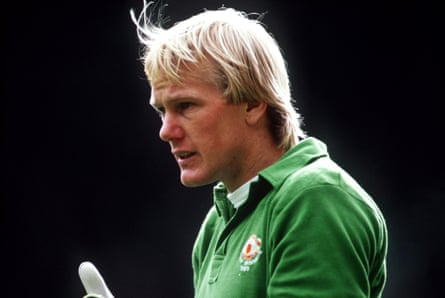
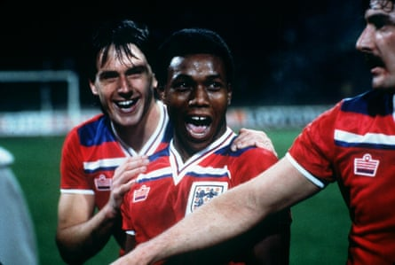
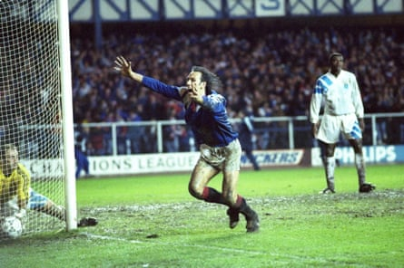
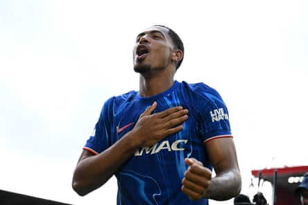
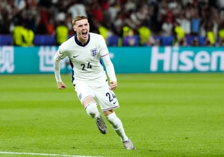

1982: England 5-4 West Germany (on agg)
Iain Hesford (goalkeeper): Made 202 appearances for Blackpool and played for other clubs including Sunderland. Died in 2014 at 54.
Danny Thomas (defender): To date the only English player to win the Under-21 Euros twice. His career ended at 26 after a severe knee injury. He played 187 league games for Coventry and Spurs, won the Uefa Cup with the latter in 1984 and got two senior England caps.
Tommy Caton (defender): Two-leg final came months after he became, with Manchester City, the youngest player to make 100 First Division appearances. Moved to Arsenal and then had spells at Oxford United and Charlton. Retired at the age of 30 and died a month later after a heart attack.
Terry Fenwick (defender): Made more than 450 league appearances, most for QPR, and played 20 times for the England senior team. One of the five players Diego Maradona dribbled past en route to scoring the “goal of the century” at the 1986 World Cup.
Terry Fenwick scythes down Diego Maradona during the infamous ‘Hand of God’ quarter-final between England and Argentina at the 1986 World Cup in Mexico.Photograph: Getty Images/Hulton Archive
Mike Duxbury (defender): Handed his debut in the first leg and scored in the second. Made 299 league appearances for Manchester United, with whom he won two FA Cups, and got 10 senior caps before finishing with Blackburn and Bradford City.
Ray Ranson (defender): Left Manchester City for Birmingham in 1984 and other clubs included Newcastle. Also had a notable business career and became chairman of Coventry.
Gary Owen (midfielder): England’s oldest player scored twice in the first leg. Played most notably for Manchester City and West Brom.
Steve McCall (midfielder): England’s holding midfielder had been a key figure in Ipswich’s 1981 Uefa Cup victory. He made more than 300 appearances for the club and played professionally until he was 39.
Sammy Lee (midfielder): England’s captain played almost 300 times for Liverpool, winning four league titles and two European Cups, and got 14 senior caps. Became an assistant manager, notably to Sam Allardyce, and briefly a manager.
Adrian Heath (midfielder): Club-record signing for Everton when he moved from Stoke shortly before the Euros. Since retiring in 1997, he has spent time managing a number of teams in the US.
A fresh-faced Adrian Heath signs for Everton for £700,000 in 1982, going on to win two league titles with the Merseyside clubPhotograph: Trinity Mirror/Mirrorpix/Alamy
Gary Shaw (forward) : Before this triumph his goals had propelled Aston Villa to a First Division title and European Cup, but his career was seriously hindered by a knee injury in 1983. Died in 2024.
Paul Goddard (forward): Played (and scored) for the senior team before this tournament in a friendly against Iceland but that proved his only senior appearance. Led the line for a number of top-division clubs, including West Ham.
David Hodgson (forward): Successes at Middlesbrough had earned a move to Liverpool and he played for five other Football League clubs and had spells in Spain, Japan, and France. Later managed Darlington.
Justin Fashanu (forward): One of the first £1m players, and the first professional footballer in England to come out as gay, he played for 22 clubs. Killed himself in 1998, aged 37.
1984: England 3-0 Spain (on agg)
Peter Hucker (goalkeeper): Left QPR, after 160 league games, for Oxford in 1986. Runs a string of football schools in London and Essex.
Gary Bailey (goalkeeper): Made 375 appearances for Manchester United under Dave Sexton (who delivered these Euros in 1982 and 1984), Ron Atkinson and Alex Ferguson. Capped only twice by England, with Peter Shilton and Ray Clemence ahead of him.
Gary Bailey was a mainstay for Manchester United throughout the 1980s, but senior level caps were scarce.Photograph: PA Images/Alamy
Dave Watson (defender): Earned the first of 12 senior England caps a month after the Euros victory. Fruitful career with Norwich and Everton. He won a league title and FA Cup with the latter.
Gary Stevens (defender): After another six years at Spurs he left for Portsmouth. Won seven England caps, two at the 1986 World Cup. Went on to coach and manage, including in Thailand.
Mel Sterland (defender): Shooting ability earned him the nickname Zico. Left boyhood club Sheffield Wednesday for Rangers and then joined Leeds. His one England cap came against Saudi Arabia in 1988.
Derek Mountfield (defender): His only under-21 appearance came in the second leg. Enjoyed success with Everton before playing for clubs including Aston Villa and Wolves.
Nick Pickering (defender): Had made his one senior England appearance, in a friendly against Australia, before this final. Left Sunderland in 1986 for Coventry, where he won the FA Cup.
Danny Thomas (midfielder): Won again.
Danny Thomas (pictured here in 1982) is the only England player to win the tournament twice.Photograph: PA Images/Alamy
Paul Bracewell (midfielder): Won major trophies with Everton after leaving Sunderland, for whom he played in three spells. Won three England caps and had short-lived forays into management with Fulham and Halifax.
Kevin Brock (midfielder): Spent the longest spells of his career at Oxford and Newcastle. After retiring he had lengthy and fruitful spells of management with non-league Banbury United and Ardley United.
Steve Hodge (midfielder): Got 24 England caps and made 386 league appearances for clubs including Forest and Villa. Sold the shirt he got from Maradona after the 1986 World Cup quarter-final for £7.1m in 2022.
Danny Wallace (forward): Moved in 1989 from Southampton to Manchester United. Won one senior cap, scoring against Egypt. Diagnosed in 1996 with multiple sclerosis.
Howard Gayle (forward): Trailblazer had in 1980 become the the first black player to play for Liverpool. Played in the Euros final at the age of 25 and went on to play for clubs including Sunderland and Blackburn.
Mark Hateley (forward): Another to feature at the 1986 World Cup. Racked up goals for Milan and Monaco before earning a £4.3m move to Rangers, where he scored 112 goals and has been named in their greatest team.
Mark Hateley enjoyed success outside of the English top flight, most notably with Rangers in the early 90s.Photograph: Darren Walsh/Action Images
Mich d’Avray (forward) Spent 11 of his 13 years as a professional at Ipswich, making 211 league appearances. Later managed in South Africa, where he was born.
Nigel Callaghan (forward): Spent most of his career with Watford, getting to an FA Cup final and winning promotion to the top flight. His professional career ended at 29, and he pursued his passion for DJing, including on the Greek island of Corfu.
2023: England 1-0 Spain
James Trafford (goalkeeper): A £15m move from Manchester City to Burnley was confirmed during the tournament. Relegated then promoted after conceding only 16 goals. Wanted by Newcastle.
Taylor Harwood -Bellis (defender): Joined Southampton from Manchester City after five loans, the last with Saints. The centre-back has shown promise, scoring on his senior international debut .
James Garner (defender): Remains at Everton, for whom he has made 59 Premier League appearances over the past two seasons.
Levi Colwill (defender): Has made himself a staple of Enzo Maresca’s Chelsea and earned senior caps.
Levi Colwill is a first-choice Chelsea centre-back and England regular.Photograph: Darren Walsh/Chelsea FC/Getty Images
Max Aarons (defender): Move to Bournemouth has not lived up to expectations, loan to Valencia brought only four appearances and recently joined Rangers on loan.
Curtis Jones (midfielder): On track to pass 200 appearances for Liverpool next season. Made his senior England debut against Greece last year, scoring in the process .
Morgan Gibbs-White (midfielder): Transformation under Nuno Espírito Santo at Nottingham Forest earned the midfielder his senior England debut last September.
Emile Smith Rowe (midfielder): Arsenal academy graduate has not added to three senior England caps and moved to Fulham last summer.
Angel Gomes (midfielder): Left Lille for Marseille this summer. Another to have graduated into the senior England team.
Anthony Gordon (forward): Has become a crucial player for Newcastle and made 10 senior appearances for England.
Cole Palmer (forward): Left Manchester City for Chelsea soon after winning this Euros title and had a breakout season. Scored England’s equaliser in the Euro 2024 final .
Cole Palmer celebrates scoring in the Euro 2024 final against Spain.Photograph: Nick Potts/PA
Noni Madueke (midfielder, substitute): Has played seven times for England and started 27 league games for Chelsea last season.
Cameron Archer (forward, substitute): Has experienced relegation from the Premier League with Sheffield United athen Southampton, where he remains.
Oliver Skipp (midfielder, substitute): After Leicester bought him from Spurs in a deal worth more than £20m last summer, he has made only 10 league starts.
Harvey Elliott (midfielder, substitute): Fired the under-21s into the 2025 final with two goals against the Netherlands. Giving serious thought to leaving Liverpool after barely getting a look-in last season.
Tommy Doyle (midfielder, substitute): A successful loan at Wolves from Manchester City led to a permanent transfer last summer.